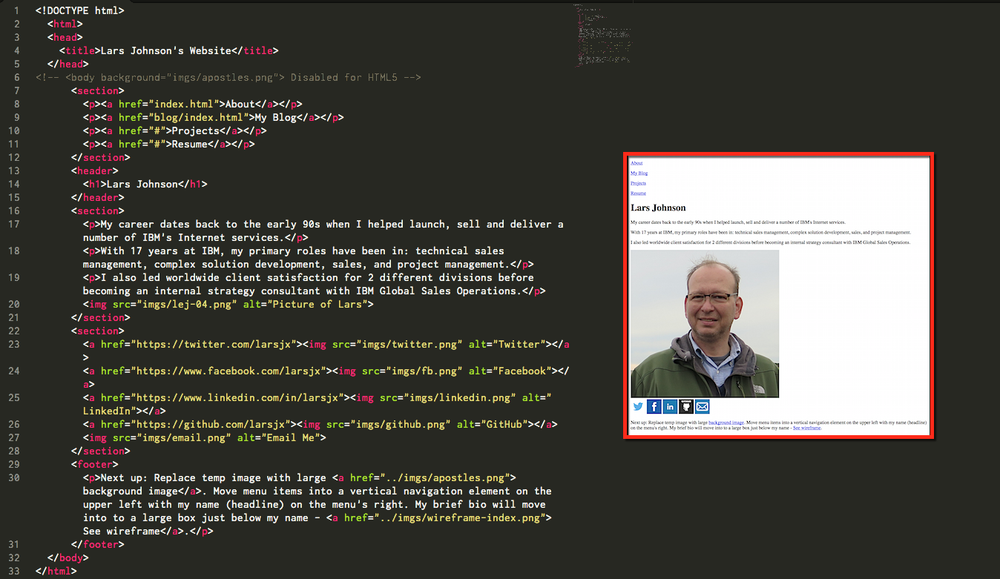

HTML for context
Sept 21, 2015 -- Marking up pages
Overview
This week we have been focused on learning HTML (Hyper Text Markup Language) which is the simple language used to give web pages their content. It's called a markup language because we put markup (tags) around the different types of content we're delivering in a web page.
This markup provides structure and information to web browsers about the content on your screen, so your browser knows to render this as a headline, that as a paragraph, this as the main section, and so forth.
We spent a good part of this week creating very simple documents that were properly organized and clearly marked up. However, while it may have been proper, and it was fun to learn, pure HTML can also be boring to look at and interact with as a user. For this reason, early web developers learned how to get creative with their HTML. They took advantage of inline styling techniques to give their pages visual variety and individual style. As you can see in the screenshots of my original code and web page below, the current trend is to avoid any kind of styling within the HTML itself.

And that's where CSS (Cascsding Style Sheets) comes in... CSS is a sister language to HTML that we'll be learning about next week so we can start giving our basic HTML documents some pizzaz. We'll be using CSS to provide a layout and visual structure to our web pages, and learning how to apply different backgrounds, fonts, borders, colors, and much more to any element within them. In fact, if you had a chance to see my pure HTML website this week, you'll understand why I can't wait to get started with CSS!